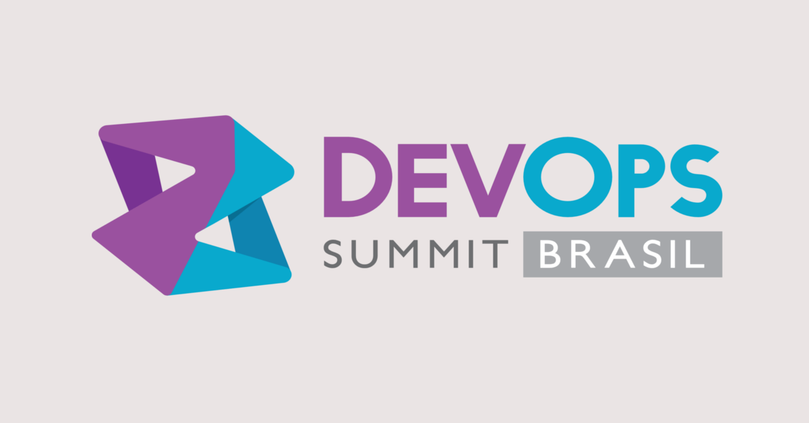

O evento
Descrição do evento, retirada do próprio site DevOpsSummitBrasil:
O DevOps Summit Brasil é a fusão dos consagrados eventos Azure Summit Brasil e ALM Summit Brasil e vem com uma abordagem interdisciplinar para promover um melhor entendimento de nuvem e DevOps. Vivemos um momento de transformação nos negócios, nos departamentos, nas pessoas e na tecnologia. O time to market, a entrega contínua de valor e a redução de custos cada vez mais são preocupações da TI. A economia baseada nos serviços de nuvem, e a entrega cada vez mais ágil, com devops, criam soluções inovadoras e requerem menos preocupação com infraestrutura e sistemas operacionais.
Esta abordagem transpareceu durante as palestras, foram apresentadas ferramentas para otimizar processos, facilitar os testes, melhorar a comunicação e garantir estabilidade durante a atualização dos ambientes de produção.
Trilhas
Acompanhei a trilha técnica que aconteceu no sábado (07/05), abaixo estão as palestras em que participei e um breve highligtht.
Pull Requests, Continuous delivery, Fluxo contínuo e Nuvem
Palestrante: Giovanni Bassi
Giovanni, compartilhou sua experiência em desenvolvimento com entrega contínua e a utilização do Visual Studio Team Services (VSTS). Foi demonstrado os cenários e etapas de preparação de Releases, Pull Request e aplicação de Scrum nos projetos.
Referências
Medindo o que interessa: Lean Metrics em projetos de software
Palestrante: Victor Hugo Germando
Victor, abordou o perigo das métricas x objetivos do projeto e sua experiência em projetos SCRUM. Particularmente gostei muito do conteúdo abordado nesta palestra, as perguntas realizadas mostraram parte da realidade do SCRUM em algumas organizações, a utilização do Kanbam e a resistência SCRUM x Prazo. Como Jeff Sutherland disse em seu livro para uma empresa com uma metodologia sem resultados e resistente ao SCRUM, "Mude ou Morra".
Referências
- Livro - LEAN Analytics: O'Reilly
- Livro - SCRUM a arte de fazer o dobro de trabalho na metade do tempo
Xamarin Test Recorder, Xamarin Test Cloud e a importância de testar seu App!
Palestrante: Angelo Belchior
Angelo, compartilhou sua experiência em testes de aplicações mobile utilizando o Xamarin Test Recorder, que grava as ações realizadas no emulador, gerando uma classe de testes xUnit, esta ferramenta me lembrou aquele plugin do Firefox para gerar testes do Selenium. O Xamarin Test Cloud é uma excelente ferramenta para automatizar seus testes em diversos dispositivos reais.
Referências
Chega de achismos! Decisão se toma com dados reais! Veja isso na prática com Application Insights
Palestrantes: Abner das Dores e Victor Cavalcante
Abner e Victor, abordaram sobre problemas reais na investigação de bugs que acontecem em produção e a carência de ferramentas e logs para auditoria e solução do problema. Esta foi uma apresentação muito prática e mostrou o poder de outra ferramenta Microsoft, o Application Insights. Uma grande inovação é a integração do StackTrace do Application Insights ao Visual Studio que aponta diretamente para o código onde se encontra o "bug".
Referências
Slack + Webhooks + VSTS: Quebrando barreiras entre plataformas e melhorando a comunicação
Palestrante: Reinaldo B. Camargo
Reinaldo, realizou uma demonstração na prática da integração do VSTS com o Slack utilizando webhooks. Mostrou a importância da utilização e centralização do Slack como meio de comunicação da empresa.
Referências
Insights sobre Microsoft Azure
Palestrante: Fabrício Sanchez
Fabrício, abordou uma demostração prática e um caso real de uma migração de estrutura de uma empresa para o Azure. Comentou sobre as estruturas ASM e ARM e quais projetos se aplicam (Custo x Performance). Compartilhou sobre a migração do SQL Server para SQL Azure e sua compatibilidade.
Referências
Procura-se DevOps
Palestrante: Camilla Gomes
Camilla, compartilhou a idealização das empresas relacionado ao DevOps. Abordou que esta deve ser uma cultura aplicada a empresa e não simplesmente uma contratação de um profissional ou criação de uma área DevOps entre o desenvolvedor e o Sysadmin. Foi uma apresentação descontraída e muito objetiva.
Referências
Como gerenciar containers Docker com Operations Management Suite
Palestrante: Gustavo Zimmermann
Gustavo, abordou sobre containers Docker e a utilização do Microsoft Operations Management Suite (OMS), serviço responsável por gerenciar e visualizar eventos. As informações não são disponibilizadas em tempo real, pois o OMS não é considerado uma ferramenta de monitoramento. Foram criados alguns containers com agentes do Microsoft OMS, compatíveis com Windows e Linux. É possível utilizar gratuitamente o serviço, porém com o limite de 7 dias de rotatividade dos arquivos de log.
Referências
Conclusão
As palestras apresentaram muitas ferramentas e abordagens que impactam no desenvolvimento de software e podem ser incorporadas ao ambiente corporativo, pois esta realidade já está presente em uma startup.
Alguns palestrantes deixaram claro a nova abordagem da Microsoft, que é utilize "Nossos serviços e ferramentas independente do sistema operacional".